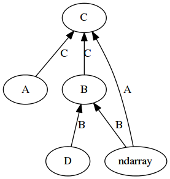

A Mechanism for Overriding Ufuncs¶
| Author: | Blake Griffith |
|---|---|
| Contact: | blake.g@utexas.edu |
| Date: | 2013-07-10 |
| Author: | Pauli Virtanen |
| Author: | Nathaniel Smith |
| Author: | Marten van Kerkwijk |
| Author: | Stephan Hoyer |
| Date: | 2017-03-31 |
Executive summary¶
NumPy’s universal functions (ufuncs) currently have some limited
functionality for operating on user defined subclasses of
ndarray using __array_prepare__ and __array_wrap__
[1], and there is little to no support for arbitrary
objects. e.g. SciPy’s sparse matrices [2] [3].
Here we propose adding a mechanism to override ufuncs based on the ufunc
checking each of it’s arguments for a __array_ufunc__ method.
On discovery of __array_ufunc__ the ufunc will hand off the
operation to the method.
This covers some of the same ground as Travis Oliphant’s proposal to
retro-fit NumPy with multi-methods [4], which would solve the same
problem. The mechanism here follows more closely the way Python enables
classes to override __mul__ and other binary operations. It also
specifically addresses how binary operators and ufuncs should interact.
(Note that in earlier iterations, the override was called
__numpy_ufunc__. An implementation was made, but had not quite the
right behaviour, hence the change in name.)
The __array_ufunc__ as described below requires that any
corresponding Python binary operations (__mul__ et al.) should be
implemented in a specific way and be compatible with Numpy’s ndarray
semantics. Objects that do not satisfy this cannot override any Numpy
ufuncs. We do not specify a future-compatible path by which this
requirement can be relaxed — any changes here require corresponding
changes in 3rd party code.
| [1] | http://docs.python.org/doc/numpy/user/basics.subclassing.html |
| [2] | https://github.com/scipy/scipy/issues/2123 |
| [3] | https://github.com/scipy/scipy/issues/1569 |
| [4] | http://technicaldiscovery.blogspot.com/2013/07/thoughts-after-scipy-2013-and-specific.html |
Motivation¶
The current machinery for dispatching Ufuncs is generally agreed to be insufficient. There have been lengthy discussions and other proposed solutions [5], [6].
Using ufuncs with subclasses of ndarray is limited to
__array_prepare__ and __array_wrap__ to prepare the output arguments,
but these don’t allow you to for example change the shape or the data of
the arguments. Trying to ufunc things that don’t subclass
ndarray is even more difficult, as the input arguments tend to
be cast to object arrays, which ends up producing surprising results.
Take this example of ufuncs interoperability with sparse matrices.:
In [1]: import numpy as np
import scipy.sparse as sp
a = np.random.randint(5, size=(3,3))
b = np.random.randint(5, size=(3,3))
asp = sp.csr_matrix(a)
bsp = sp.csr_matrix(b)
In [2]: a, b
Out[2]:(array([[0, 4, 4],
[1, 3, 2],
[1, 3, 1]]),
array([[0, 1, 0],
[0, 0, 1],
[4, 0, 1]]))
In [3]: np.multiply(a, b) # The right answer
Out[3]: array([[0, 4, 0],
[0, 0, 2],
[4, 0, 1]])
In [4]: np.multiply(asp, bsp).todense() # calls __mul__ which does matrix multi
Out[4]: matrix([[16, 0, 8],
[ 8, 1, 5],
[ 4, 1, 4]], dtype=int64)
In [5]: np.multiply(a, bsp) # Returns NotImplemented to user, bad!
Out[5]: NotImplemted
Returning NotImplemented to user should not happen. Moreover:
In [6]: np.multiply(asp, b)
Out[6]: array([[ <3x3 sparse matrix of type '<class 'numpy.int64'>'
with 8 stored elements in Compressed Sparse Row format>,
<3x3 sparse matrix of type '<class 'numpy.int64'>'
with 8 stored elements in Compressed Sparse Row format>,
<3x3 sparse matrix of type '<class 'numpy.int64'>'
with 8 stored elements in Compressed Sparse Row format>],
[ <3x3 sparse matrix of type '<class 'numpy.int64'>'
with 8 stored elements in Compressed Sparse Row format>,
<3x3 sparse matrix of type '<class 'numpy.int64'>'
with 8 stored elements in Compressed Sparse Row format>,
<3x3 sparse matrix of type '<class 'numpy.int64'>'
with 8 stored elements in Compressed Sparse Row format>],
[ <3x3 sparse matrix of type '<class 'numpy.int64'>'
with 8 stored elements in Compressed Sparse Row format>,
<3x3 sparse matrix of type '<class 'numpy.int64'>'
with 8 stored elements in Compressed Sparse Row format>,
<3x3 sparse matrix of type '<class 'numpy.int64'>'
with 8 stored elements in Compressed Sparse Row format>]], dtype=object)
Here, it appears that the sparse matrix was converted to an object array
scalar, which was then multiplied with all elements of the b array.
However, this behavior is more confusing than useful, and having a
TypeError would be preferable.
This proposal will not resolve the issue with scipy.sparse matrices, which have multiplication semantics incompatible with numpy arrays. However, the aim is to enable writing other custom array types that have strictly ndarray compatible semantics.
| [5] | http://mail.python.org/pipermail/numpy-discussion/2011-June/056945.html |
| [6] | (1, 2) https://github.com/numpy/numpy/issues/5844 |
Proposed interface¶
The standard array class ndarray gains an __array_ufunc__
method and objects can override Ufuncs by overriding this method (if
they are ndarray subclasses) or defining their own. The method
signature is:
def __array_ufunc__(self, ufunc, method, *inputs, **kwargs)
Here:
- ufunc is the ufunc object that was called.
- method is a string indicating how the Ufunc was called, either
"__call__"to indicate it was called directly, or one of its methods:"reduce","accumulate","reduceat","outer", or"at". - inputs is a tuple of the input arguments to the
ufunc - kwargs contains any optional or keyword arguments passed to the
function. This includes any
outarguments, which are always contained in a tuple.
Hence, the arguments are normalized: only the required input arguments
(inputs) are passed on as positional arguments, all the others are
passed on as a dict of keyword arguments (kwargs). In particular, if
there are output arguments, positional are otherwise, that are not
None, they are passed on as a tuple in the out keyword
argument (even for the reduce, accumulate, and reduceat methods
where in all current cases only a single output makes sense).
The function dispatch proceeds as follows:
- If one of the input or output arguments implements
__array_ufunc__, it is executed instead of the ufunc. - If more than one of the arguments implements
__array_ufunc__, they are tried in the following order: subclasses before superclasses, inputs before outputs, otherwise left to right. - The first
__array_ufunc__method returning something else thanNotImplementeddetermines the return value of the Ufunc. - If all
__array_ufunc__methods of the input arguments returnNotImplemented, aTypeErroris raised. - If a
__array_ufunc__method raises an error, the error is propagated immediately. - If none of the input arguments had an
__array_ufunc__method, the execution falls back on the default ufunc behaviour.
In the above, there is one proviso: if a class has an
__array_ufunc__ attribute but it is identical to
ndarray.__array_ufunc__, the attribute is ignored. This happens for
instances of ndarray and for ndarray subclasses that did not
override their inherited __array_ufunc__ implementation.
Type casting hierarchy¶
The Python operator override mechanism gives much freedom in how to write the override methods, and it requires some discipline in order to achieve predictable results. Here, we discuss an approach for understanding some of the implications, which can provide input in the design.
It is useful to maintain a clear idea of what types can be “upcast” to
others, possibly indirectly (e.g. indirect A->B->C is implemented but
direct A->C not). If the implementations of __array_ufunc__ follow a
coherent type casting hierarchy, it can be used to understand results of
operations.
Type casting can be expressed as a graph defined as follows:
For each
__array_ufunc__method, draw directed edges from each possible input type to each possible output type.That is, in each case where
y = x.__array_ufunc__(a, b, c, ...)does something else than returningNotImplementedor raising an error, draw edgestype(a) -> type(y),type(b) -> type(y), ...
If the resulting graph is acyclic, it defines a coherent type casting
hierarchy (unambiguous partial ordering between types). In this case,
operations involving multiple types generally predictably produce result
of the “highest” type, or raise a TypeError. See examples at the
end of this section.
If the graph has cycles, the __array_ufunc__ type casting is not
well-defined, and things such as type(multiply(a, b)) !=
type(multiply(b, a)) or type(add(a, add(b, c))) != type(add(add(a,
b), c)) are not excluded (and then probably always possible).
If the type casting hierarchy is well defined, for each class A, all
other classes that define __array_ufunc__ belong to exactly one of
three groups:
- Above A: the types that A can be (indirectly) upcast to in ufuncs.
- Below A: the types that can be (indirectly) upcast to A in ufuncs.
- Incompatible: neither above nor below A; types for which no (indirect) upcasting is possible.
Note that the legacy behaviour of numpy ufuncs is to try to convert
unknown objects to ndarray via np.asarray. This is
equivalent to placing ndarray above these objects in the graph.
Since we above defined ndarray to return NotImplemented for
classes with custom __array_ufunc__, this puts ndarray
below such classes in the type hierarchy, allowing the operations to be
overridden.
In view of the above, binary ufuncs describing transitive operations should aim to define a well-defined casting hierarchy. This is likely also a sensible approach to all ufuncs — exceptions to this should consider carefully if any surprising behavior results.
Example
Type casting hierarchy.
The __array_ufunc__ of type A can handle ndarrays returning C,
B can handle ndarray and D returning B, and C can handle A and B returning C,
but not ndarrays or D. The
result is a directed acyclic graph, and defines a type casting
hierarchy, with relations C > A, C > ndarray, C > B > ndarray,
C > B > D. The type A is incompatible with B, D, ndarray,
and D is incompatible with A and ndarray. Ufunc
expressions involving these classes should produce results of the
highest type involved or raise a TypeError.
Example
One-cycle in the __array_ufunc__ graph.
In this case, the __array_ufunc__ relations have a cycle of length 1,
and a type casting hierarchy does not exist. Binary operations are not
commutative: type(a + b) is A but type(b + a) is B.
Example
Longer cycle in the __array_ufunc__ graph.
In this case, the __array_ufunc__ relations have a longer cycle, and a
type casting hierarchy does not exist. Binary operations are still
commutative, but type transitivity is lost: type(a + (b + c)) is A but
type((a + b) + c) is C.
Subclass hierarchies¶
Generally, it is desirable to mirror the class hierarchy in the ufunc
type casting hierarchy. The recommendation is that an
__array_ufunc__ implementation of a class should generally return
NotImplemented unless the inputs are instances of the same class or
superclasses. This guarantees that in the type casting hierarchy,
superclasses are below, subclasses above, and other classes are
incompatible. Exceptions to this need to check they respect the
implicit type casting hierarchy.
Note
Note that type casting hierarchy and class hierarchy are here defined
to go the “opposite” directions. It would in principle also be
consistent to have __array_ufunc__ handle also instances of
subclasses. In this case, the “subclasses first” dispatch rule would
ensure a relatively similar outcome. However, the behavior is then less
explicitly specified.
Subclasses can be easily constructed if methods consistently use
super to pass through the class hierarchy [7]. To support
this, ndarray has its own __array_ufunc__ method,
equivalent to:
def __array_ufunc__(self, ufunc, method, *inputs, **kwargs):
# Cannot handle items that have __array_ufunc__ (other than our own).
outputs = kwargs.get('out', ())
for item in inputs + outputs:
if (hasattr(item, '__array_ufunc__') and
type(item).__array_ufunc__ is not ndarray.__array_ufunc__):
return NotImplemented
# If we didn't have to support legacy behaviour (__array_prepare__,
# __array_wrap__, etc.), we might here convert python floats,
# lists, etc, to arrays with
# items = [np.asarray(item) for item in inputs]
# and then start the right iterator for the given method.
# However, we do have to support legacy, so call back into the ufunc.
# Its arguments are now guaranteed not to have __array_ufunc__
# overrides, and it will do the coercion to array for us.
return getattr(ufunc, method)(*items, **kwargs)
Note that, as a special case, the ufunc dispatch mechanism does not call
this ndarray.__array_ufunc__ method, even for ndarray subclasses
if they have not overridden the default ndarray implementation. As a
consequence, calling ndarray.__array_ufunc__ will not result to a
nested ufunc dispatch cycle.
The use of super should be particularly useful for subclasses of
ndarray that only add an attribute like a unit. In their
__array_ufunc__ implementation, such classes can do possible
adjustment of the arguments relevant to their own class, and pass on to
the superclass implementation using super until the ufunc is
actually done, and then do possible adjustments of the outputs.
In general, custom implementations of __array_ufunc__ should avoid
nested dispatch cycles, where one not just calls the ufunc via
getattr(ufunc, method)(*items, **kwargs), but catches possible
exceptions, etc. As always, there may be exceptions. For instance, for a
class like MaskedArray, which only cares that whatever
it contains is an ndarray subclass, a reimplementation with
__array_ufunc__ may well be more easily done by directly applying
the ufunc to its data, and then adjusting the mask. Indeed, one can
think of this as part of the class determining whether it can handle the
other argument (i.e., where in the type hierarchy it sits). In this
case, one should return NotImplemented if the trial fails. So,
the implementation would be something like:
def __array_ufunc__(self, ufunc, method, *inputs, **kwargs):
# for simplicity, outputs are ignored here.
unmasked_items = tuple((item.data if isinstance(item, MaskedArray)
else item) for item in inputs)
try:
unmasked_result = getattr(ufunc, method)(*unmasked_items, **kwargs)
except TypeError:
return NotImplemented
# for simplicity, ignore that unmasked_result could be a tuple
# or a scalar.
if not isinstance(unmasked_result, np.ndarray):
return NotImplemented
# now combine masks and view as MaskedArray instance
...
As a specific example, consider a quantity and a masked array class
which both override __array_ufunc__, with specific instances q
and ma, where the latter contains a regular array. Executing
np.multiply(q, ma), the ufunc will first dispatch to
q.__array_ufunc__, which returns NotImplemented (since the
quantity class turns itself into an array and calls super, which
passes on to ndarray.__array_ufunc__, which sees the override on
ma). Next, ma.__array_ufunc__ gets a chance. It does not know
quantity, and if it were to just return NotImplemented as well,
an TypeError would result. But in our sample implementation, it
uses getattr(ufunc, method) to, effectively, evaluate
np.multiply(q, ma.data). This again will pass to
q.__array_ufunc__, but this time, since ma.data is a regular
array, it will return a result that is also a quantity. Since this is a
subclass of ndarray, ma.__array_ufunc__ can turn this into
a masked array and thus return a result (obviously, if it was not a
array subclass, it could still return NotImplemented).
Note that in the context of the type hierarchy discussed above this is a
somewhat tricky example, since MaskedArray has a strange
position: it is above all subclasses of ndarray, in that it can
cast them to its own type, but it does not itself know how to interact
with them in ufuncs.
| [7] | https://rhettinger.wordpress.com/2011/05/26/super-considered-super/ |
Turning Ufuncs off¶
For some classes, Ufuncs make no sense, and, like for some other special
methods such as __hash__ and __iter__ [8], one can indicate
Ufuncs are not available by setting __array_ufunc__ to None.
If a Ufunc is called on any operand that sets __array_ufunc__ = None,
it will unconditionally raise TypeError.
In the type casting hierarchy, this makes it explicit that the type is
incompatible relative to ndarray.
| [8] | https://docs.python.org/3/reference/datamodel.html#specialnames |
Behavior in combination with Python’s binary operations¶
The Python operator override mechanism in ndarray is coupled to
the __array_ufunc__ mechanism. For the special methods calls such as
ndarray.__mul__(self, other) that Python calls for implementing
binary operations such as * and +, NumPy’s ndarray
implements the following behavior:
- If
other.__array_ufunc__ is None,ndarrayreturnsNotImplemented. Control reverts to Python, which in turn will try calling a corresponding reflexive method onother(e.g.,other.__rmul__), if present. - If the
__array_ufunc__attribute is absent onotherandother.__array_priority__ > self.__array_priority__,ndarrayalso returnsNotImplemented(and the logic proceeds as in the previous case). This ensures backwards compatibility with old versions of NumPy. - Otherwise,
ndarrayunilaterally calls the corresponding Ufunc. Ufuncs never returnNotImplemented, so reflexive methods such asother.__rmul__cannot be used to override arithmetic with NumPy arrays if__array_ufunc__is set to any value other thanNone. Instead, their behavior needs to be changed by implementing__array_ufunc__in a fashion consistent with the corresponding Ufunc, e.g.,np.multiply. See List of operators and NumPy Ufuncs for a list of affected operators and their corresponding ufuncs.
A class wishing to modify the interaction with ndarray in
binary operations therefore has two options:
- Implement
__array_ufunc__and follow Numpy semantics for Python binary operations (see below). - Set
__array_ufunc__ = None, and implement Python binary operations freely. In this case, ufuncs called on this argument will raiseTypeError(see Turning Ufuncs off).
Recommendations for implementing binary operations¶
For most numerical classes, the easiest way to override binary
operations is thus to define __array_ufunc__ and override the
corresponding Ufunc. The class can then, like ndarray itself,
define the binary operators in terms of Ufuncs. Here, one has to take
some care to ensure that one allows for other classes to indicate they
are not compatible, i.e., implementations should be something like:
def _disables_array_ufunc(obj):
try:
return obj.__array_ufunc__ is None
except AttributeError:
return False
class ArrayLike(object):
...
def __array_ufunc__(self, ufunc, method, *inputs, **kwargs):
...
return result
# Option 1: call ufunc directly
def __mul__(self, other):
if _disables_array_ufunc(other):
return NotImplemented
return np.multiply(self, other)
def __rmul__(self, other):
if _disables_array_ufunc(other):
return NotImplemented
return np.multiply(other, self)
def __imul__(self, other):
return np.multiply(self, other, out=(self,))
# Option 2: call into one's own __array_ufunc__
def __mul__(self, other):
return self.__array_ufunc__(np.multiply, '__call__', self, other)
def __rmul__(self, other):
return self.__array_ufunc__(np.multiply, '__call__', other, self)
def __imul__(self, other):
result = self.__array_ufunc__(np.multiply, '__call__', self, other,
out=(self,))
if result is NotImplemented:
raise TypeError(...)
To see why some care is necessary, consider another class other that
does not know how to deal with arrays and ufuncs, and thus has set
__array_ufunc__ to None, but does know how to do
multiplication:
class MyObject(object):
__array_ufunc__ = None
def __init__(self, value):
self.value = value
def __repr__(self):
return "MyObject({!r})".format(self.value)
def __mul__(self, other):
return MyObject(1234)
def __rmul__(self, other):
return MyObject(4321)
For either option above, we get the expected result:
mine = MyObject(0)
arr = ArrayLike([0])
mine * arr # -> MyObject(1234)
mine *= arr # -> MyObject(1234)
arr * mine # -> MyObject(4321)
arr *= mine # -> TypeError
Here, in the first and second example, mine.__mul__(arr) gets called
and the result arrives immediately. In the third example, first
arr.__mul__(mine) is called. In option (1), the check on
mine.__array_ufunc__ is None will succeed and thus
NotImplemented is returned, which causes mine.__rmul__(arg)
to be executed. In option (2), it is presumably inside
arr.__array_ufunc__ that it becomes clear that the other argument
cannot be dealt with, and again NotImplemented is returned,
causing control to pass to mine.__rmul__.
For the fourth example, with the in-place operators, we have here
followed ndarray and ensure we never return
NotImplemented, but rather raise a TypeError. In
option (1) this happens indirectly: we pass to np.multiply, which
in turn immediately raises TypeError, because one of its operands
(out[0]) disables Ufuncs. In option (2), we pass directly to
arr.__array_ufunc__, which will return NotImplemented, which
we catch.
Note
the reason for not allowing in-place operations to return
NotImplemented is that these cannot generically be replaced by
a simple reverse operation: most array operations assume the contents
of the instance are changed in-place, and do not expect a new
instance. Also, what would ndarr[:] *= mine imply? Assuming it
means ndarr[:] = ndarr[:] * mine, as python does by default if
the ndarr.__imul__ were to return NotImplemented, is
likely to be wrong.
Now consider what would happen if we had not added checks. For option
(1), the relevant case is if we had not checked whether
__array_func__ was set to None. In the third example,
arr.__mul__(mine) is called, and without the check, this would go to
np.multiply(arr, mine). This tries arr.__array_ufunc__, which
returns NotImplemented and sees that mine.__array_ufunc__ is
None, so a TypeError is raised.
For option (2), the relevant example is the fourth, with arr *=
mine: if we had let the NotImplemented pass, python would have
replaced this with arr = mine.__rmul__(arr), which is not wanted.
Because the semantics of Ufunc overrides and Python’s binary operations
are nearly identical, in most cases options (1) and (2) will
yield the same result with the same implementation of __array_ufunc__.
One exception is the order in which implementations are tried when the
second argument is a subclass of the first argument, due to a Python
bug [9] expected to be fixed in Python 3.7.
In general, we recommend adopting option (1), which is the option most
similar to that used by ndarray itself. Note that option (1)
is viral, in the sense that any other class that wishes to support binary
operations with your class now must also follow these rules for supporting
binary arithmetic with ndarray (i.e., they must either implement
__array_ufunc__ or set it to None). We believe this is a good
thing, because it ensures the consistency of ufuncs and arithmetic on all
objects that support them.
To make implementing such array-like classes easier, the mixin class
NDArrayOperatorsMixin provides option (1) style
overrides for all binary operators with corresponding Ufuncs. Classes
that wish to implement __array_ufunc__ for compatible versions
of NumPy but that also need to support binary arithmetic with NumPy arrays
on older versions should ensure that __array_ufunc__ can also be used
to implement all binary operations they support.
Finally, we note that we had extensive discussion about whether it might
make more sense to ask classes like MyObject to implement a full
__array_ufunc__ [6]. In the end, allowing classes to opt out was
preferred, and the above reasoning led us to agree on a similar
implementation for ndarray itself. The opt-out mechanism requires
disabling Ufuncs so a class cannot define a Ufuncs to return a different
result than the corresponding binary operations (i.e., if
np.add(x, y) is defined, it should match x + y). Our goal was to
simplify the dispatch logic for binary operations with NumPy arrays
as much as possible, by making it possible to use Python’s dispatch rules
or NumPy’s dispatch rules, but not some mixture of both at the same time.
| [9] | http://bugs.python.org/issue30140 |
List of operators and NumPy Ufuncs¶
Here is a full list of Python binary operators and the corresponding NumPy
Ufuncs used by ndarray and
NDArrayOperatorsMixin:
| Symbol | Operator | NumPy Ufunc(s) |
|---|---|---|
< |
lt |
less |
<= |
le |
less_equal |
== |
eq |
equal |
!= |
ne |
not_equal |
> |
gt |
greater |
>= |
ge |
greater_equal |
+ |
add |
add |
- |
sub |
subtract |
* |
mul |
multiply |
/ |
truediv
(Python 3) |
true_divide |
/ |
div
(Python 2) |
divide |
// |
floordiv |
floor_divide |
% |
mod |
remainder |
| NA | divmod |
divmod |
** |
pow |
power [10] |
<< |
lshift |
left_shift |
>> |
rshift |
right_shift |
& |
and_ |
bitwise_and |
^ |
xor_ |
bitwise_xor |
| |
or_ |
bitwise_or |
@ |
matmul |
Not yet implemented as a ufunc [11] |
And here is the list of unary operators:
| Symbol | Operator | NumPy Ufunc(s) |
|---|---|---|
- |
neg |
negative |
+ |
pos |
positive [12] |
| NA | abs |
absolute |
~ |
invert |
invert |
| [10] | class :ndarray takes short cuts for __pow__ for the
cases where the power equals 1 (positive),
-1 (reciprocal), 2 (square), 0 (an
otherwise private _ones_like ufunc), and 0.5
(sqrt), and the array is float or complex (or integer
for square). |
| [11] | Because NumPy’s matmul is not a ufunc, it is
currently not possible
to override numpy_array @ other with other taking precedence
if other implements __array_func__. |
| [12] | ndarray currently does a copy instead of using this ufunc. |
Future extensions to other functions¶
Some numpy functions could be implemented as (generalized) Ufunc, in
which case it would be possible for them to be overridden by the
__array_ufunc__ method. A prime candidate is matmul,
which currently is not a Ufunc, but could be relatively easily be
rewritten as a (set of) generalized Ufuncs. The same may happen with
functions such as median, min, and
argsort.